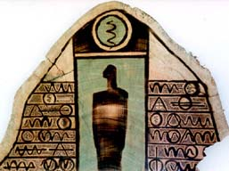

Tayseer Barakat and HistoryAmong realities of culture and heroic will power lies the story of the artist Tayseer Barakat. His work is a confirmation of the power of revolutionary culture in general and of Palestinian Arab history in particular. Like a river seeking the ocean, mankind's artistic culture pours through the expression of individuals, who are devoted to it even in times of national tragedy, as is the case in Palestine.by Samia A. Halaby -- September, 1999
Untitled, 1996, 35 x 85 cm, burnt wood
Tayseer was born in Jabaliye Refugee Camp in Gaza in 1959. In 1983 he graduated from the College of Fine Arts in Alexandria, Egypt. Directly after graduation he went to the village of Deir Ghassaneh in the section of Palestine now called the West Bank. There he spent one heady month painting on panels and paper. He completed fifteen works and had his first one-artist exhibition in the open air of the village square.
Untitled, 1989, 20 x 35 cm, ink on paperHis inspiration at experiencing Palestinian village life left a lasting impression on him -- one that is intimately bound with his growing up in a refugee camp. At Deir Ghassaneh Tayseer discovred the sources of refugee strength. Few people stop to realize the powerful patterns of culture which Palestinians carry with them to the refugee camp and which they reweave, in spite of all Israeli oppression, into a precious tapestry of social relations. From there have risen artists, scholars, leaders, and powerful ideas for liberation and revolution - powerful flowers of heroism and ambition.
Untitled, 1990, 50 x 70 cm, ink on paperLike other Palestinians who suffered the denial of homeland, the discovery of a living piece of Palestine is deeply emotional and impressive. It is pure joy. It is healing. The consciousness of the camp meets the sources of its strength. At Deir Ghassaneh Tayseer committed himself more deeply to the ancient culture of his and my land, its painting, its tendencies to deep thought and profound inspiration. But Tayseer Barakat did not dream of prophecy. Rather, his inspiration contained the images of his society. He brought them out into reality - he put them on paper and wood.
Untitled, 1990, 50 x 70 cm, ink on paperTayseer Barakat sees the form of his art as a reaffirmation of ancient Palestinian art. Indeed, if one searches the ancient ancestors of the contemporary Arab World one finds precisely the sources of his visual expression and of his thinking. He asserts: "The ancients touch me. I utilize many shapes and forms from their imagery." Ancient Iraqi, Canaanite, Phoenician, and Egyptian art are clearly present in his work on both the intuitive and studied levels.
It matters to him that he is helping to build a contemporary Arabic and Palestinian art; and it matters that the basis of this art is our own history and not a reliance on European or American sources. This deeply felt persuasion is revealed in a poem (printed below) which he wrote in memory of his father. Moreover, he feels that it is of primary importance that the symbols in his work are social and that they are understood by his society as emanating from them and belonging to them. Unlike contemporary European and American painters, Tayseer is not interested in the mysticism of 'personal symbolism.' He is conscious of the implicit contradiction of the idea of 'personal symbolism.' That contradiction being that symbolism by its nature is intended to communicate a shared idea and thus is social not personal.
Three Women, 1992, ink and dyes on paperIn the work above titled "Three Women," 1992, we are moved when we see the three female figures lashed by burning sandstorms while standing solidly against this abuse. It is the condition of Palestinians now -- leaning against the wind facing the exigencies of history and the tragedies of Zionist encroachment. It is called 'Al-Sumoud' and it has a deeply poignant meaning which evokes both pain and yearning while being infinitely stubborn.
Tayseer Barakat has a healthy consciousness of the international traditions of the 20th century. He is aware that much that is international is co-opted by "Western" media. He seeks to focus on the ancient history of the Arab World while he remains informed about contemporary international art. This awareness is clearly visible in the modernist attributes of his work.
Untitled, 1997, 90 x 150 cm, burnt and tinted woodOrganizing a series of narrative images within a single panel enforces methods different from those possible in the murals, bas-reliefs, and scrolls of ancient times. Ancient pictures were monumental in scale. Contemporary pictures are intended for single homes which are miniscule in contrast to ancient temples and palaces. Tayseer applies a patterning of rows and compartments as a general method to contain the many parts of his narrative imagery. It is an abstraction which relies on a combination of the narrative rows of ancient art as well as the symmetry of medieval Arabic art. They also possess a rhythm which is reminiscent of Cubism. In this respect, Barakat is like the many artists of our century who support national and working class liberation and whose work relies on Cubism for its form. Good examples of this are the wonderful painting of Mexican Muralists such as Diego Rivera, Jose Clemente Orozco, David Alfaro Siqueiros, and others.
Tayseer Barakat also sees his search for materials as a significant part of the form and also the content of his work. In this respect he shares an ambition to utilize historic materials with both Mustafa Al-Hallaj of Al-Quds (Jerusalem) and with Sliman Mansour. Both Hallaj and Mansour have explored tinted pastes to apply to the surface of a panel. Hallaj depends on the traditions of medieval Arabic interior design still alive in Damascus; and Mansour tries to discover new pastes related to the soil of Palestine. Tayseer also shares with them the view that material is a part of content. His search for suitable materials is not only a search for the forms but also the meaning possible through their use.
Barakat used oil on wood during the early years. He later rejected oil, feeling that the medium did not fit his needs. He used and still uses collage as well as inks and dyes on paper. He experimented with graphite and watercolors and mixed media. He said: "The materials which I chose had a connection with the ancient history of the Canaanites and the Assyrians."
Untitled, 1991, 50 x 70 cm, ink on paperTayseer Barakat tends to maintain a monochromatic ambiance in his work often only using black and white. As a result his work has the powerful look of simple means. Although of his work is on paper; recently, he began using burnt images on wood. He enhances the results by adding dyes. The new method is consistent with early methods in that the burnt blackness on a background of natural wood remains monochromatic and dramatric in contrast. Barakat knows well how to be conscious of the negative/positive relationship of figure to background. It is a form that is inherent to Arabic calligraphy.
Untitled, 1996, 85 x 115 cm, burnt and tinted woodTayseer’s work with wood has very specific qualities. Each work is an assemblage of many small, sometimes modular, parts. He assembles the parts into either free-standing sculpture or into panels. The panels are composed of several horizontal rows of wooden fragments. The wooden fragments create a rhythmic tessellation. Formal simplicity is a strength in his work allowing the images to overpower the seduction of materials.
 Untitled, 1997, 96 x 95 cmI had the opportunity to interview him at Ziryab this past April 6th of 1999. As he talked in Arabic I translated and typed on my laptop. Several meetings at Ziryab ensued and we continued our discussion. I deepened my understanding of his ideas and his attitude. A capsule of the interview and meetings follows:
Untitled, 1992, 50 x 70 cm, ink on paperTayseer! In your work, what is the meaning of the figures which are separated from the group? This group of images grows from "the atmosphere of the refugee camp and from childhood memories. I remember how magical it felt to play at dawn in the camp. I remember holding hands with the other children and playing together. I remember the strength the group gave me. The single figure is an idea that was with me since childhood. It means freedom and flight from the present and from the pain of the camp." Pointing to a specific painting he said: "The woman alone could be my mother watching over us or motherhood in general. She is separated because she is more important and the row here is a row of children."
Untitled, 1991, 50 x 70 cm, ink on paperAre you painting a city when you use many rows of figures? "The pictures of many rows will seem to observers like views of cities. My intention is to impart a sense of historical settlement, of groups of houses from ancient times, and of birds and figures and other shapes. The whole might impart a sense of the mythological. I inject into them sensations from the fables of my childhood. My grandmother told me the mythological stories of Palestine and I have grown to respect and to understand their importance. I grasp fragments from literature and from pictures of how our ancient progenitors lived, loved, fought, and worked in this land."
Untitled, 1989, 20 x 35 cm, ink on paperWhat is the meaning of rhythm in your work? "When I draw I try to realize the history of our area. The ancients had a philosophy. They drew how they understood life with all their senses not only how they saw it with their eyes. The ancient arts had a paradigm, a style, and one component of it was rhythm. The ancients utilized rhythm as the infrastructure of the story. Often, they used row after row full of pictorial narrative. The horizontal rows form a time-line for the events of life. They told and can still tell the story of life while they portray the passage of events. The rhythm of the art is the rhythm of life. When I draw I try to be unaware on a conscious level. Another aspect of rhythmic structure is the way it aids in the transformation of the conscious into the intuitive. As I work I try to put my thoughts into an intuitive level through visual rhythm."
Untitled, 1983, 20 x 105 cmWhy are all the colors dark? "It reflects the hardships of our time and our present life. I think the pressure on us makes us use dark colors." The painting above with two doves reflects the yearning for a normal life by camp children. The loving pair of doves fly above the children with a row of houses in the background.
For whom do you work? Who is the audience? "Mostly for me and some for life. It makes me at ease when I work. I want people to know me first as an artist then as a Palestinian."
Tayseer, when do you think Arabic art began? "It began with the art history of all those who lived in this area. Is began in ancient Iraq as early as 3500 BC." Discussion on this subject extended for several meetings. We agreed that most of contemporary Arab artists from Palestine, Syria, Jordan, Lebanon, Egypt, Iraq, and North Africa, consider the ancients as their ancestors. This is seen as natural in spite of manifold Arab nations and religions. We understood that the "West" applies labels to us and to our ancestors in such a way as to make us seem separate from our ancient. The too numerous labels create confusion and fragmentation. It aids hostile ideologies which imply that Arab lands and their resources do not belong to Arabs but somehow belong to Israelis or to the "West."
What makes your work Palestinian? "I do not use the flag or the olive tree. I try to use the spirit of the place. I do not really know what makes it Palestinian. I see Palestine as the most beautiful land in the world and it has all of nature's various atmospheres from cold mountains to hot desert to wet areas. I find the variation beautiful. It affects me. I love the desert and the sea and the mountains. I lived in the Negev desert in the south of Palestine and I had Bedouin friends. I spent a lot of time with them. When I was 17 I lived in Gaze near the sea. And here in Ramallah I see the mountains. I love the architecture of Palestine. I also love the people of Palestine; I love their faces, their movements, their speech, and their habits."
Tayseer Barakat has exhibited his work in Palestine and Internationally since his graduation in 1984. His work has been seen in many important exhibitions internationally in Jordan, Paris, Al-Quds (Jerusalem), Italy, Germany, Brazil, Austria, Sweden, Spain, and New York. He represented Palestine at the Biennale of Sao Paaulo in 1996.
Tayseer Barakat along with Vera Tamari and Sliman Mansour established Al-Wasiti Art Center in Al-Quds (Jerusalem). With the imposition of the many barriers-to-movement which the Israelis impose on Palestinians, it was hard for Tayseer to maintain close contact with Al-Wasiti. In time he opened Ziryab Café in Ramallah. There he serves food to the intellectuals and joints in their conversation. It is also at Ziryab that Tayseer Barakat exhibits his work and the work of other Palestinian artists and sculptors.
My Grandmother... The Town of Beisan... The Arab City of Jerusalem... Sabah Told Me... My Home in Yafa... Khader Told Me... Olives of Palestine... Our Students... A Taxi Ride in Bethlehem... Written by Doctor Fathihe Saudi... Hasan Told Me... A Visit to Kafr Qasem... The Artist or Kafr Qasem... The Massacre at Kafr Qasem (not yet ready)
Rana Bishara, painter, intallation artist... Tayseer Barakat, painter... Sari Khouri, painter... Abdel Tamam, painter... Vera Tamari, ceramist and painter... Adnan Yahya, painter and graphic artists...
{kind=link}